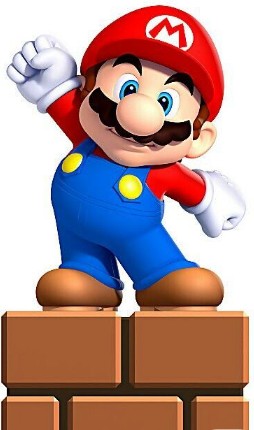

Sobre
Super Mario Bros é um clássico dos videogames, lançado pela Nintendo em 1985.
O jogador controla Mario (e às vezes Luigi), enfrentando inimigos e desafios
para resgatar a Princesa Peach do vilão Bowser.
Games
- Nintendo Entertainment System (NES)
- Super Mario Bros (1985)
- Super Mario Bros 3 (1988)
- Super Nintendo (SNES)
- Nintendo 64
- Nintendo GameCube
- Super Mario Sunshine (2002)
- Nintendo DS
- New Super Mario Bros (2006)
- Nintendo Wii
- Super Mario Galaxy (2007)
- Super Mario Galaxy 2 (2010)
- Nintendo Wii U
- Super Mario 3D World (2013)
X|Instagram|Facebook